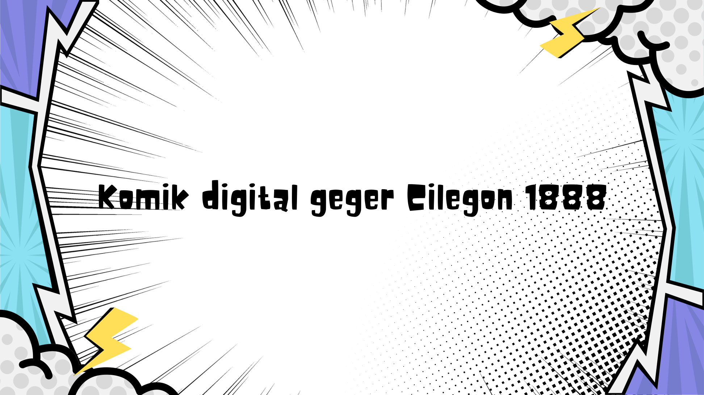

Ruang Tokoh
Kenali tokoh-tokoh yang hadir dalam narasi komik: Rina, guru sejarah, pemimpin agama, petani, dan pejabat kolonial.
Baca kisah Geger Cilegon 1888 melalui komik digital karya siswa Kelas VIII SMP Negeri 5 Cilegon.

Kenali tokoh-tokoh yang hadir dalam narasi komik: Rina, guru sejarah, pemimpin agama, petani, dan pejabat kolonial.
1883 — Letusan Krakatau dan dampaknya di kawasan Selat Sunda.
1888 — Peristiwa Geger Cilegon.
Komik ini merupakan media pembelajaran sejarah lokal. Ilustrasi rekonstruksi visual perlu dibaca sebagai penggambaran artistik, bukan foto dokumentasi peristiwa.
Letusan Krakatau mengguncang kawasan Selat Sunda dan memicu bencana besar di wilayah pesisir.
Perlawanan rakyat di Cilegon menjadi bagian penting dalam sejarah masyarakat Banten.